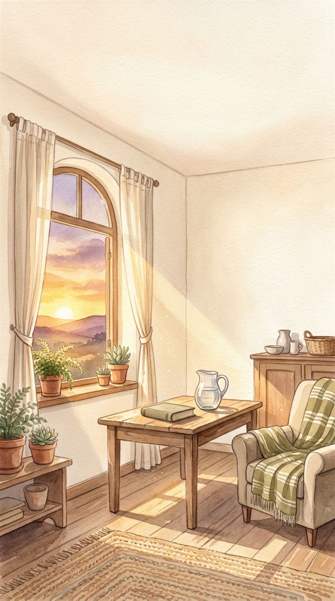
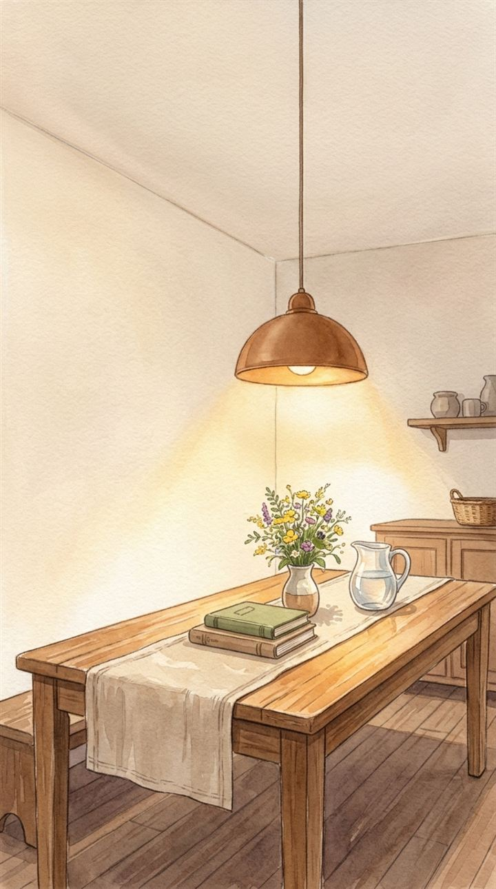
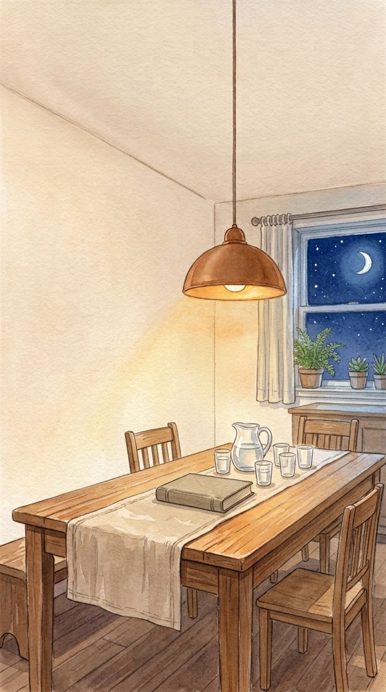
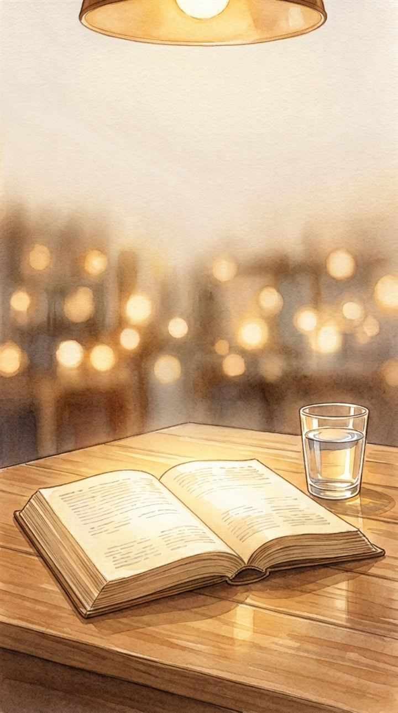
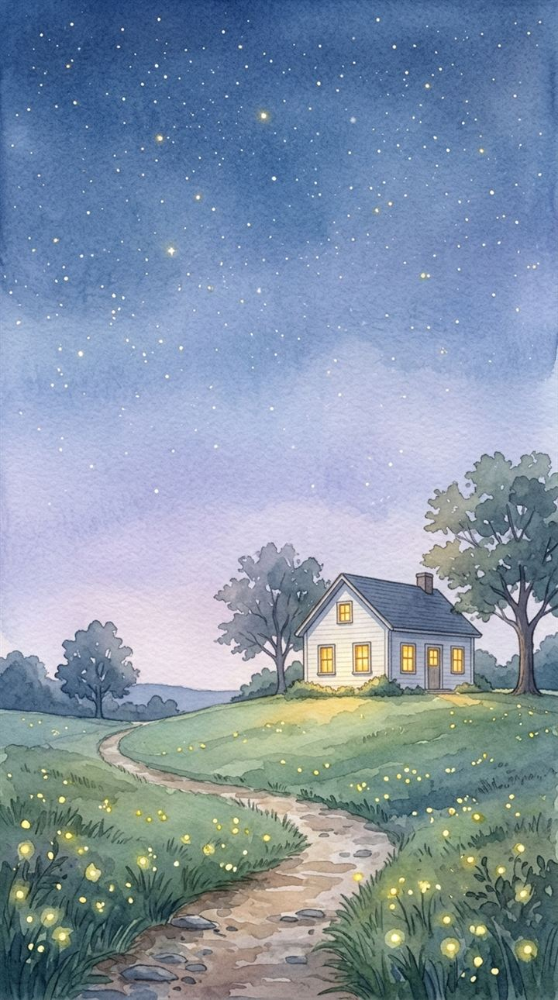

O Evangelho no Lar, os livros e a família no mesmo lugar.
Boa noite
Evangelho no Lar desta semana

Quinta, 20h
Leitura inicial
Uma mensagem curta antes do Evangelho. Arraste para ver os livros.

Encontro concluído

Obras de Allan Kardec
Traduções de Guillon Ribeiro e, em O Céu e o Inferno, de Manuel Quintão. O app guarda a página onde você parou em cada livro.
Fonte Viva, Pão Nosso, Alerta e os outros livros da leitura inicial têm direitos autorais. A família lê no próprio exemplar; o app sorteia a lição ou pede para abrir ao acaso.
Estudos
O curso que a FEB orienta para começar, trilhas pelas obras básicas e um tutor que responde só com o que está nos livros.
O Estudo Sistematizado da Doutrina Espírita é o curso que a FEB orienta para quem está começando: um roteiro por vez, na ordem dos módulos. .
Módulos e roteiros: ESDE, Programa Fundamental, Tomos I e II, edição revista e atualizada (FEB, 2020 e 2021). O texto de cada roteiro está na apostila da FEB, e o estudo rende mais em grupo, numa casa espírita. As leituras de Kardec indicadas são uma sugestão do app.
Para ler direto nas obras, junto com o ESDE ou depois dele. A ordem é uma sugestão do app, não da FEB: comece pela 1. Cada capítulo aberto acende uma estrela da trilha.
O ESDE e os outros cursos da FEB têm direitos da editora. Você vai importar o PDF da sua apostila e ler aqui, com a página guardada.
Família
Cada Evangelho no Lar faz brotar uma folha. A cada quatro encontros, nasce um cacho.
“Porás no cabeçalho do livro a cepa que te desenhamos, porque é o emblema do trabalho do Criador.”O Livro dos Espíritos, Prolegômenos

“Onde quer que se encontrem duas ou três pessoas reunidas em meu nome, eu com elas estarei.”O Evangelho segundo o Espiritismo, cap. XXVIII, item 4
Com a idade de cada um, o Evangelho mostra as versões infantis certas para esta casa.
Pode ser mais de uma vez por semana. No dia, o app avisa a família.
Nomes de quem precisa de amparo. Eles aparecem na prece inicial, para quem faz a prece lembrar de cada um.